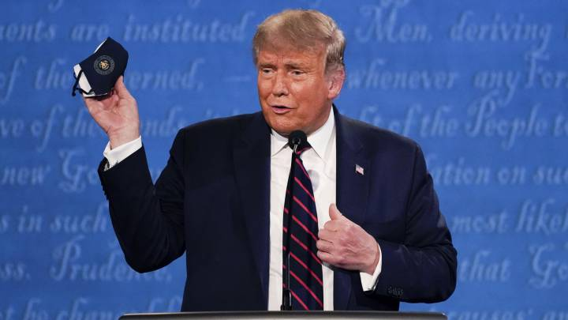
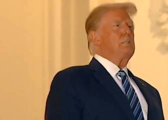
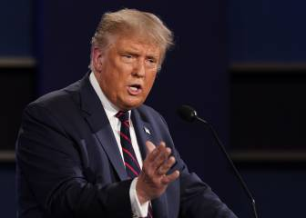

Las teorías de conspiración sobre el positivo de Trump: ¿Tiene realmente coronavirus?
Ha pasado poco menos de una semana desde que el líder de la Casa Blanca, Donald Trump, dio positivo en las pruebas de coronavirus y desde aquel entonces los reflectores del mundo entero se han girado entorno al mandatario.
Sin embargo, los diversos informes sobre su estado de salud han resultado ser un tanto contradictorios, pues en un inicio el equipo de prensa de la Casa Blanca dio a conocer que el estado de salud del mandatario era preocupante, mientras que, al mismo tiempo, uno de los médicos que se encontraba atendiendo a Trump señaló que el empresario se estaba recuperando rápidamente de la infección, esto, luego de administrarle oxígeno por al menos una hora.
Dicho esto, las contradicciones sobre el estado de salud del Presidente de la Unión Americana desataron un sinfín de teorías conspirativas, desde las que afirman que el líder de la Casa Blanca jamás tuvo coronavirus hasta las que señalan que fue infectado a propósito como parte de su campaña electoral.
Y es que, una de las principales teorías se desató luego de que en twitter resurgiera un tweet del pasado mes de Septiembre en el que un usuario señala que el próximo movimiento de Trump será anunciar su positivo para después curarse milagrosamente con el medicamento que ha estado promocionando desde el inicio de la epidemia, la hidroxicloroquina.
'La sorpresa de Trump en Octubre será el anuncio de 'su infección'.Falso, pero bastante dramático.Este giro sacará a Biden de las pantallas, el 'reloj Trump COVID' domina cada minuto de cada día.Luego, 14 días después, emergerá Trump, 100% curado con hidroxicloroquina.', expresó un usuario de twitter.


Trump’s October surprise will be the announcement of 'his infection.'Fake, but quite dramatic.This twist will blow Biden off the screens, the 'Trump COVID watch' dominating every minute of every day.Then, 14 days later, Trump will emerge, 100% cured by hydroxychloroquine.— JohnCammo (@JohnCammo) September 18, 2020
Asimismo, hay quienes afirman que el Presidente se contagió a propósito para que el vicepresidente, Mike Pence, asuma el cargo a la presidencia y le sustituya en la candidatura presidencial republicana de tal modo que Trump consiga el indulto general en caso de desarrollarse un
impeachment. Otra de las teorías señala que Trump sólo anunció su positivo para retrasar las elecciones y así ganar más tiempo y sobre todo, empatía; además de conseguir restarle importancia a su contrincante, Joe Biden.
Aunado a ello, el moderador del primer debate presidencial, Chris Wallace, dio a conocer que Trump realmente no se sometió a ninguna prueba de coronavirus cuando se llevó a cabo el primer encuentro entre este y Biden.De hecho, Wallace afirma que Trump llegó demasiado tarde como para hacerse la prueba, por lo que el staff aplicó el famoso 'sistema de honor', medida que permite a quienes llegan afirmar que han dado negativo en las pruebas, esto, para seguir adelante y no retrasar el evento.
Dichas declaraciones dieron paso a otra nueva teoría: Trump asistió con coronavirus al primer debate presidencial a propósito para contagiar a su contrincante, Joe Biden, y así poder resultar vencedor en las próximas elecciones del 3 de Noviembre.Todas estas teorías son resultado del bombardeo de información que reciben los ciudadanos día tras día, aunado a la desinformación que suele correr rápidamente en redes sociales.
Sin embargo, mientras todas estas teorías recorren el mundo entero y el Presidente continúa con su tratamiento desde su hogar, el Congreso se encuentra analizando todos los escenarios posibles para las próximas elecciones, en caso que el estado de salud de Trump empeore: que Mike Pence sea presidente interino, retrasar las elecciones o bien, seguir con otro candidato republicano.
Posted On: 2020-10-06T17:20:00

Content Date: 2020-10-06
Download Date: 2021-05-13
Document ID: L0C04C990